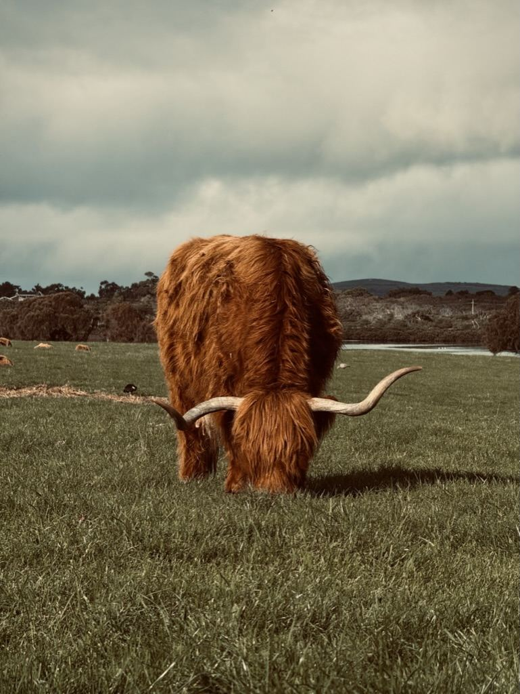

Australia · Street · Landscape · After Dark
Dylan Leary
Photography
Documentary, urban and landscape photography focused on atmosphere, weather, place and the overlooked moments in between.
Portfolio
A complete selection of Dylan Leary photographs, including the Website archive. Click any photograph for a larger view.
About
Photographs of place, weather and everyday life.
Dylan Leary is an Australian photographer working across black-and-white documentary photography, street scenes, landscapes, architecture and dramatic weather.
@dylanlearyphotography